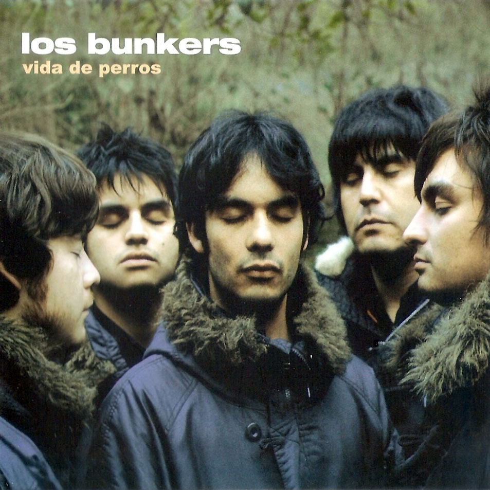

|  |
LetraAhora Que No EstásLos Bunkers |
Ahora que no estás
Y no puedo dormir
Y tomo más pastillas
Para sobrevivir
Ahora que te miro
Y que pareces otra
Entiendo las palabras
Que caen de tu boca
Ahora es evidente
Que tú duermes con otro
Y no era tan difícil como me dijiste ayer
Vete muy lejos
Muy lejos de este mundo
Aunque sea demasiado tarde para ti
No me dejes aquí
Lo poco y nada que nos queda
Quédate lejos
Tan lejos de mi mente
Donde no mires de frente a nadie como yo
No me dejes aquí esperando
Como si fuera cosa fácil para mí...
Ahora que no estás
Y no puedo dormir
Y sé que no bastaba
Mi alma para ti
Ahora que no importa
Que yo me venga abajo
Y todas las razones
Se caen a pedazos
Ahora que estoy solo
Y muero por mi cuenta
Entiendo las palabras que escupiste sobre mí
Vete muy lejos
Muy lejos de este mundo
Aunque sea demasiado tarde para ti
No me dejes aquí
Lo poco y nada que nos queda
Quédate lejos
Tan lejos de mi mente
Donde no mires de frente a nadie como yo
No me dejes aquí
esperando
Como si fuera cosa fácil para mí...